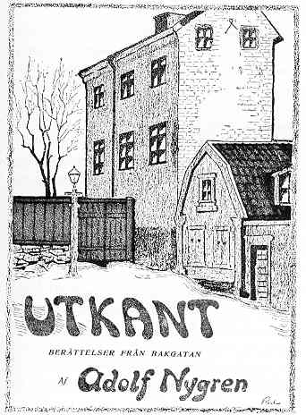
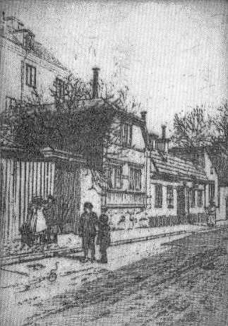
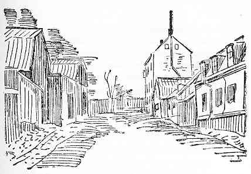

|
 Omslag till Adolf Nygrens "Utkant" av Martin Koch. Bilden visar Adlersparreska huset sett mot öster från Högbergsgatan.  Mäster Mikaels gata 9-11. I bakgrunden Adlersparreska huset. Etsning av E.Ekroth 1918.  Mäster Mikaels gata österut. Det vita huset är nr 11 med "Kajutan" till vänster. "Han såg litet undrande ut som om han aldrig förr hade hört talas om en sådan gata, men en kamrat tillkastade honom en upplysning, och vi gåvo oss iväg. Det blev en åktur som aldrig tycktes ta slut. Jag höjde ibland på den djupt nedfällda suffletten för att se vart det bar hän. Vi foro över Gustav Adolfs torg, över Norrbro, utmed Skeppsbron fram till Slussen. Sedan bar det av uppåt Södermalms ändlösa gator. Men där var jag mycket litet bevandrad, och jag undrade mycket vart kusken skulle komma att föra mig. Mig föreföll det, som om färden skulle ha varat i timmar, och det syntes mig nästan omöjligt att visa mig hos Esselde denna sena timme, om det verkligen var så, att kusken körde rätt, och hon bodde åt det här hållet. Äntligen stannade droskan på en smal och krokig gata. Jag steg ur, men såg inte något hus framför mig, endast en lång fönsterlös mur. Kusken visade mig på en port i muren och en klocksträng. Jag drog i klocksträngen, och någon måtte ha öppnat porten, ty straxt därefter stod jag på en muromgiven gårdsplan. Mitt framför mig skymtade dunkelt ett högt smalt hus. Ingen ingångsdörr kunde jag se, endast en trappa vilken smal och hög som en stege löpte fram utanpå huset." Kanske har minnet romantiserat framställningen, den skrevs först på 1920-talet. Hur som helst släpptes den lilla lärarinnan in, hon fick ett enkelt rum att sova i men kunde ännu inte få möta den mäktiga Esselde, som låg sjuk. Nästa morgon gick fröken Lagerlöf på vidare upptäcktsfärd i huset: "Så snart som jag var klädd, steg jag ut på trappan och vandrade uppför den så långt jag kunde komma. Det föreföll mig, som om det höga smala huset inte inrymde stort annat än denna trappa med små krypin på avsatserna. Äntligen i toppen av trappan fann jag en öppen dörr och steg in i ett rum, som jag kände igen sedan föregående kväll. Men då hade väl gardinerna varit nerfällda, så att jag alls inte hade kunnat märka vad detta var för ett rum. Nu blev jag nästan bländad av allt det ljus som strömmade emot mig. Det var som att komma ut på ett ångbåtsdäck eller på en bergtopp, fri och öppen utsikt åt alla håll. Ingen människa fanns i rummet, och jag gick från fönster till fönster och skådade. Det var den underbaraste utsikt, som väl något stockholmshus har ägt.
|
Kajutan med ingång från Högbergsgatan eller genom dåvarande Fjällgatan 11 kallades ibland också för "Adlersparreska palatset" men som palats var det onekligen ganska anspråkslöst, sju-åtta rum fördelade på tre smala våningar. Huset var förmodligen byggt på 1700-talet, skalden C. V. A. Strandberg ("Talis Qualis") lär ha bott där någon tid efter sin flyttning till Stockholm 1815. 1874 inköptes huset av kommendören och riksdagsmannen Axel Adlersparre och hans maka, den kända författarinnan och kvinnosaksförespråkarinnan "Esselde". Stora reparationer igångsattes och först våren 1875 kunde paret flytta in tillsammans med Adlersparres barn från ett tidigare äktenskap. Då hade huset förvandlats till något av ett örlogsfartyg. Ledstängerna hade tagits bort i de branta trapporna och ersatts av tåglinor, alla dörrar bytts ut mot skjutdörrar, rummen hade inga tapeter eller gardiner - "sådan rumsprydnad tycktes honom höra landkrabban till" - utan var "boisserade", som ångbåtssalonger. "Då man slog upp de massiva luckorna till matsalsfönstret, vilket öppnade en vid utsikt över den djupt under våra fötter flytande Norrström och bredvidliggande stränder ända ut till Hasselbacken, kände man sig som på ett högrest örlogsfartyg ovanom de lägre farkoster, som lätt vaggade i vattendraget därnedanför", skrev historikern Otto Sjögren, senare hyresgäst i huset. Huset hade tidigare haft ingång från Högbergsgatan men Adlersparre hade ändrat detta så att man i stället tog sig in intill det lilla hus där kuskbostaden fanns, nuvarande Mäster Mikaels gata 11, varefter man via en stentrappa kom upp till det högre belägna "palatset". Huset uppvärmdes av en ny uppfinning som ägaren hade fått idé till vid någon av sina utländska resor, en väldig s.k. amerikansk spis som genom kraftiga kopparrör försåg våningarna med ständigt varmt vatten.
I detta hus planerade Esselde Fredrika Bremerförbundets start och där redigerade hon dess tidning och sände medarbetarna i olika ideella organisationer sina "ukaser från Söder". Egentligen ansåg hon nog att läget var alltför avlägset, hon ville helst bo i centrum av staden medan hennes make längtade efter det lugn och den avskildhet han kunde få på det då ganska stillsamma Söder. Axel Adlersparre avled få år efter inflyttningen, redan sommaren 1879. Hans kista bars nerför Söderbergs branta trappor till Stadsgården och fördes sedan över Strömmen till Galärvarvskyrkogarden på Djurgården. Esselde bodde kvar en del år, hon hyrde ut de två nedre våningarna till Otto Sjögren, då nyanställd kollega vid Katarina läroverk, och behöll endast övervåningen. Dit upp kom många av tidens kända personer på besök, bland dem författarinnan Victoria Benedictsson som en tid bodde i gästrummet. Nyåret 1887 anlände Selma Lagerlöf. Hon kom med tåg till Centralen, fick tag i en droska och gav kusken adressen: Fjällgatan 11.
 Adlersparreska huset på Högbergsgatans nu försvunna del, sett från väster. Teckning i Stockholms Dagblad 1908. Hela staden låg nedanför med husmassor och vattendrag, med tornspiror och rökpelare, alltsammans översvävat av vinterhimlens dimmor och dunster, som skiftade från ljusrött till gråsvart, från ljust violett till rödbrunt." Selma Lagerlöf var imponerad. Men den rastlösa Esselde såg mer på avstånden än på utsikten och flyttade från bergtoppen för att bosätta sig vid Tunnelgatan. Också Otto Sjögren flyttade. Under några år (1888-1891) bodde sedan Georg och Hanna Pauli där. 1892 köptes huset av staden, för kommande rivning i samband med Katarinavägens framdragande. Ännu en konstnär hann emellertid bo där en tid, Carl Schuberth som bl.a. illustrerat Emil Norlanders "Tre fattiga pojkar" och försett bokens omslag med en bild från Mikaels trappgränd.
Adlersparreska huset revs, förmodligen våren 1909, men kuskbostaden och några andra av småhusen
finns kvar i renoverat skick, Mäster Mikaels gata 11, och har blivit bostad för
stadsbyggnadsdirektören. Vid sekelskiftet bodde en lykttändare där, pappa till en av Richard Isbergs
många kälkåkningsvänner, Lisa. Isberg besökte därför många gånger huset och minns särskilt
julgransplundringarna då en bekant till lykttändaren, Eriksson, roade barnen. Eriksson var buktalare
och "kunde tala med Jakob, som hade sitt huvudsakliga tillhåll i kakelugnen. Eriksson och Jakob
resonerade vidlyftigt och ingående med varandra genom stängda kakelugnsluckor, och Jakob hade en
underbar förmåga att hastigt kunna förflytta sig till olika platser i kakelugnen och skorstenen. Jakob
pockade bestämt på att Eriksson skulle öppna en lucka. Men Eriksson ville inte, för han var rädd att
Jacob skulle hoppa ut."
|


{kind=link}
{kind=link}